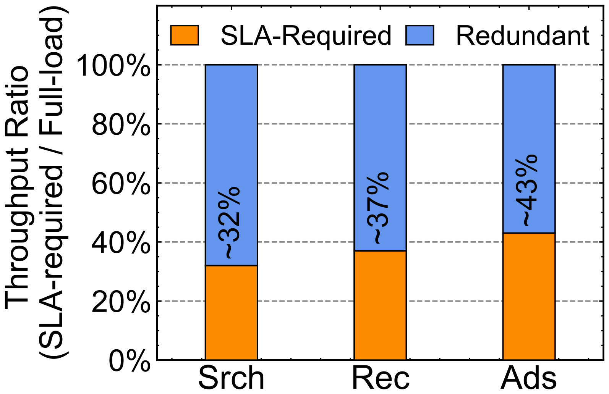
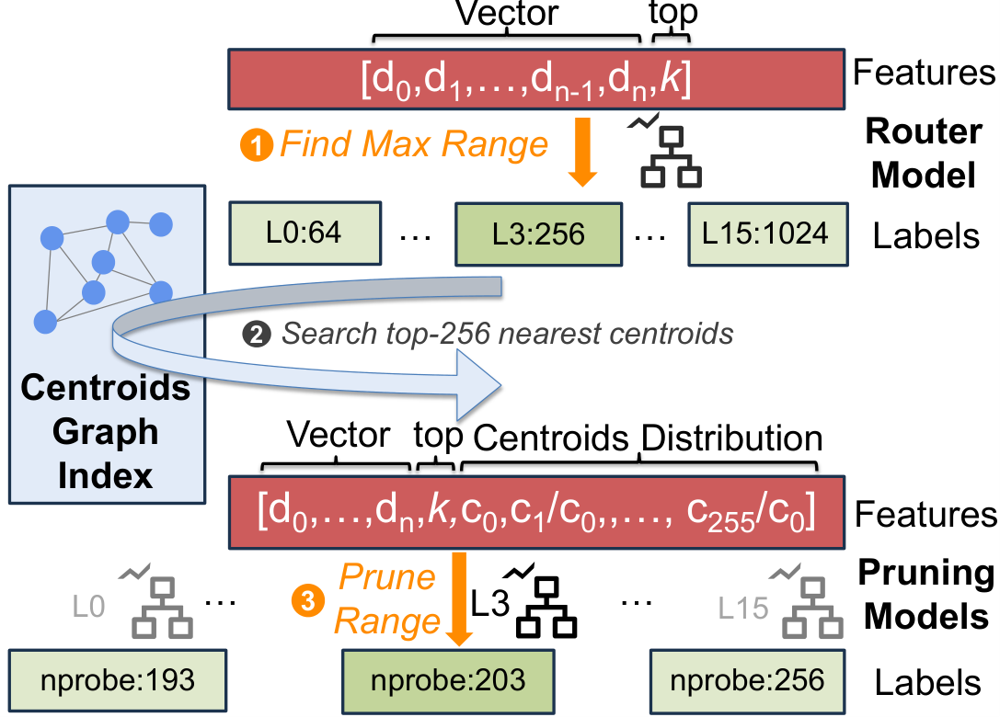
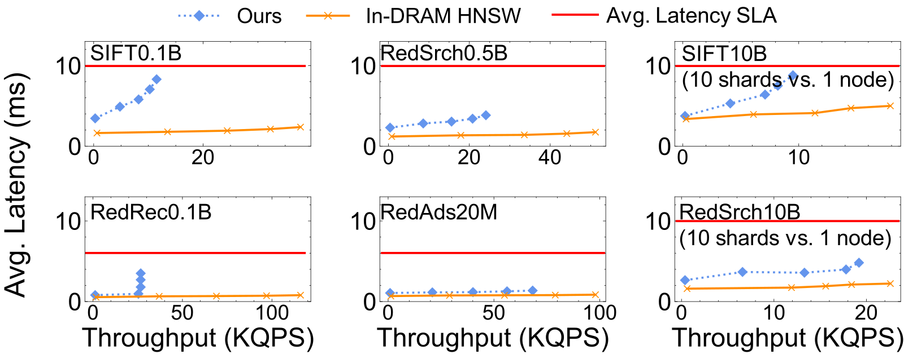

Contents · 10 sections
1What problem is it solving?2Why not a graph index on SSD3The big picture4Storage stack: bypassing the kernel5Learning the probing range per query6Index building: GPU coarse clustering plus elastic CPUs7Results8Limitations as I see them9How a team could try this10VerdictSHARE
Infrastructure teams running large in-memory vector search with a growing DRAM bill should read this one closely. The paper comes from Xiaohongshu (RedNote), East China Normal University and Shanghai Jiao Tong University, and it describes a system that is already in production. Its core claim fits in one sentence: when the retrieval stage asks for top-k in the hundreds or thousands, graph indexes on SSD are bound to be slow because every step waits for the previous read, while a clustering index issues one batch of independent reads, so with 12 PCIe Gen5 SSDs it can get close to in-memory performance. On the authors' own workloads, a single 96-core server meets the latency SLA (the agreed latency ceiling) at 25% to 70% of the throughput of in-memory HNSW on the same machine. At 10 billion vectors, one machine reaches 47% to 85% of a 10-shard in-memory deployment with nearly 10× less DRAM. In production, about 40 all-flash servers replaced in-memory clusters that used about 35,000 CPU cores and 0.35 PB (petabytes) of DRAM. Two caveats matter: its "cost efficiency" counts only DRAM and SSD prices, and the gains are largest when top-k is large and the recall target is around 90%.
What problem is it solving?
Search, recommendation and ads at Xiaohongshu all depend on ANNS (approximate nearest neighbor search): queries and content become vectors, and the system finds the nearest ones among hundreds of billions. Real-time services need 5 to 10 ms average latency; search peaks around 300K QPS and recommendation around 2.5M QPS. To keep latency stable the company used all-in-memory HNSW graph indexes, and by 2025 these three services alone used petabytes of DRAM, with vector counts doubling every year.
The authors first did the arithmetic: only a fraction of the in-memory cluster's throughput is actually needed to meet the SLA, and the rest of the DRAM is bought just to hold the data.

SSD capacity, on the other hand, is far cheaper. In the paper's price table (December 2025), DRAM costs about $8/GB and Gen5 SSD about $0.2/GB, or 2.5% of the price, while 12 Gen5 SSDs together offer about 32% of the bandwidth of 12-channel DDR5, which means SSD bandwidth is no longer low. So the question becomes whether the index can live on SSD while holding the 5 to 10 ms latency.
Why not a graph index on SSD
The usual memory-plus-SSD designs are DiskANN and its successors Starling and PipeANN: compressed vectors sit in memory, raw vectors and graph edges on SSD, and search walks the graph toward the query. Xiaohongshu already runs DiskANN for relaxed offline work such as content moderation, but not online. On a 96-core machine with 12 Gen5 SSDs, using SIFT100M at 90% recall and top-k from 10 to 3000, DiskANN and Starling never met the SLA, and PipeANN, the fastest, reached only 1/10 to 1/25 of in-memory HNSW throughput, which shows the problem lies in graph traversal itself.
The reason is dependency between reads. A sketch:
| Approach | Reads for one top-1000 query | Relation between reads | Consequence |
|---|---|---|---|
| Graph index on SSD | Candidate queue of about 1500, over a thousand hops | Each hop waits for the previous read to know where to go | SSD latency, 100 to 1000× DRAM, is multiplied serially |
| Clustering index | Find the nearest clusters in memory, then read them | Issued at once, independent | Throughput scales with more SSDs reading in parallel |
The reference clustering index is SPANN (Microsoft's memory-plus-SSD clustering index): vectors are grouped into many similar-sized clusters, a graph over cluster centroids stays in memory, and each cluster's vectors are stored contiguously on SSD. A query finds its nearest nprobe centroids in memory and then reads those clusters in one go. On 12 Gen5 SSDs, SPANN's latency was already near the SLA and throughput grew almost linearly with SSD count, about 12× at 12 drives. Three gaps remained: throughput was only 12% to 14% of HNSW, with SSD bandwidth only 26% to 59% used; a fixed pruning rule over-reads or under-reads for individual queries; and single-machine CPU index building takes days at 10-billion scale. Helmsman addresses each.
The big picture
![Helmsman overview. Online (left): a router model sets the probing range for each query (1), the centroid graph in memory finds the nearest clusters (2), the pruning model for that level removes extra clusters (3), read commands go directly to the NVMe SSDs (4), completions are polled (5), and distances are computed to rank top-k (6). Offline (right): multi-GPU servers produce initial centroids, local CPUs or an elastic CPU cluster split and balance clusters, a many-core server merges the index and trains the pruning models, then the index is published.](../../../figs/2026-08-18/infra/2606.13145/fig1_overview.png)
Each serving node has 12 × 2 TB PCIe Gen5 NVMe SSDs, 12 × 96 GB DDR5 memory modules and a 96-core CPU. Memory holds only the centroid graph and pruning models; cluster data is spread across the SSDs as logical blocks.
Storage stack: bypassing the kernel
Clustering search I/O has two traits. It issues many reads: a top-3000 query may read about 1000 clusters. For SIFT100M, of the 10 ms budget, centroid search, distance computation and sorting take 2 to 4 ms, leaving 6 to 8 ms for I/O, so each search thread needs 120K to 170K reads per second, while the I/O stack SPANN uses usually manages 30K to 40K. And reads are fixed-size: clusters are balanced and padded to equal length, for example 12 KB per cluster on SIFT, exactly three 4 KB pages.
Profiling SPANN's I/O path showed that the kernel stack (system calls, file system, block layer, RAID (disk array) mapping, NVMe driver) took up to 58% of end-to-end time, more than the SSD read itself. io_uring helped, but only the user-space driver SPDK reached the needed read rate. SPDK removes the kernel's file and space management, so the authors built three things:
- Data layout: small metadata (index names, cluster-to-SSD mapping, pruning models) stays in ordinary files kept in memory; cluster data is written directly to logical blocks, each cluster in one contiguous range on one SSD, so a cluster is one command.
- I/O submission: a search thread queues a batch of commands and rings each SSD's doorbell once, saving hundreds of PCIe round trips, then polls for completions.
- Space allocation: because clusters are fixed-size, a free list of 64 MB chunks manages SSD space for all indexes, allocated and reclaimed whole.
Learning the probing range per query
nprobe, the number of clusters read, sets both recall and cost. SPANN reads only clusters whose distance is within (1+ε) of the nearest cluster's, with a fixed hand-set ε. On about 100 queries the authors found this rule prunes few clusters and often over- or under-reads per query, so recall varies widely.
Academic early-termination methods such as Quake, LAET (a learned early-termination method) and Auncel decide whether to continue by looking at intermediate results, which breaks one parallel batch into serial reads and destroys the clustering index's advantage. They also tend to assume fixed top-k and variable recall targets, whereas at Xiaohongshu the recall target is fixed per service (90% for online search) and top-k varies per request, from 100 to 3000.

The resulting design, LLSP (the authors' name for leveled learned search pruning), uses GBDT (gradient-boosted decision tree) models throughout: minutes to train, 10 to 30 µs per prediction, a few hundred KB in size. The key is that it uses only information available before search starts, so once nprobe is set the whole batch of reads can still go out at once.
Training data comes from logs, sampling about 1% of requests from the previous day for search and the previous hour for recommendation and ads, because short windows contain many repeats. Ground truth is approximated by unpruned search at nprobe=4096. The router's label is the smallest level, from 64 to 1024 in steps of 64, that reaches the recall target; each level's pruner is labeled by lowering nprobe from the cap until recall just hits the threshold. Feature importance on the search data shows the router relies 67% on the query vector and 33% on top-k, while centroid distances account for half of the pruner's decisions.
Index building: GPU coarse clustering plus elastic CPUs
SPANN builds in three steps: hierarchical k-means into size-bounded clusters, replication of boundary vectors into neighbor clusters, and a graph over centroids. The first step takes 60% to 80% of the time and originally runs on one machine's CPUs. Helmsman moves coarse clustering to GPUs (Faiss k-means), after which most clusters are already under the 100K-vector cap; CPUs then split oversized clusters and replicate boundaries. Recommendation and ads indexes under 100M vectors use the GPU server's own CPUs; large daily-rebuilt search indexes borrow idle CPUs in the online cluster at night, yielding to live traffic and retrying later. A many-core server finally merges shards, builds the centroid graph and trains pruners.
Results
All numbers are at 90% recall:
| Comparison | Result | What it shows |
|---|---|---|
| Throughput vs other SSD designs | 2 to 16× higher, average latency under 10 ms | With large top-k, SSD graph indexes are limited by serial reads |
| SSD bandwidth use (search, 0.5B) | About 85% on Gen4, 70% on Gen5; SPANN about 55% on Gen4, graph indexes around 20% or less | Kernel-bypass batched I/O actually uses the bandwidth |
| Gen4 to Gen5 upgrade | Throughput +55% (64/128 dims) to +87% (1024 dims); graph indexes only +10% to 30% | Only this design benefits from new hardware bandwidth |
| Pruning module | 1.1 to 1.6× over no pruning, 5% to 25% over the fixed rule; over 40% of queries miss the recall target under the fixed rule, over 80% meet it under LLSP | Per-query ranges save I/O and stabilize recall |
| vs same-node in-memory HNSW (20M to 0.5B) | 25% to 70% of HNSW throughput, always within the average-latency SLA | On the same machine it is still clearly slower than all-memory |
| 10B vectors | One 96-core machine with 160 to 330 GB DRAM reaches 47% to 85% of 10-shard HNSW (320 cores, 2.5 TB DRAM) | 3 to 4× fewer cores, nearly 10× less DRAM |

The cost table deserves a careful read. On the 0.5B search data, HNSW uses 123 GB DRAM (about $1,000) for 51 KQPS; Helmsman uses 8 GB DRAM plus 162 GB SSD (about $96) for 24 KQPS (thousand queries per second). Throughput per dollar is 250 vs 51, which works out to 4.9× from the table (the text says 5.4×), but it counts only memory and SSD purchase prices, not CPUs, servers or power, and absolute throughput is under half of HNSW. At 10B scale the same measure gives 10 vs 1.2, or 8.3×. For building cost, the authors set one hour of a 96-core CPU cloud instance to 1: HNSW takes 1.5 hours on it (cost 1.5), while Helmsman takes 1.3 hours on a 96-core plus 4-GPU instance priced 1.3 per hour (cost 1.7). So GPUs do not save money here; their value is scale, cutting 100M-vector builds from 9 to 12 hours on one CPU node to under an hour, and 10B builds from over 16 hours to 4 to 7 hours with 10,000 CPU cores.
Limitations as I see them
First, the advantage depends on the operating point of large top-k and about 90% recall. The authors state that 100 to 1000 candidates at roughly 90% accuracy are worth more to the business than chasing 98%+ recall. For top-10, very high recall or budgets well under 5 ms, the conclusion does not transfer, because on the same machine its latency is higher than HNSW and its throughput is a quarter to 70% of HNSW's.
Second, the cost comparison favors the system. Throughput per dollar counts storage media only; production also saved CPU cores, but that is not put into a whole-server cost. In the 10B cost table, Helmsman serves 19 KQPS against 23 KQPS for the 10-shard HNSW, so the 8.3× gain in throughput per dollar comes from cutting DRAM from 2.5 TB to 0.16 TB, not from running faster.
Third, there are clear hardware ceilings and operational gaps. 12 Gen5 SSDs offer about 140 GB/s in theory, but only about 70% is usable because DDR5's effective 300 to 350 GB/s must carry SSD writes into memory, CPU reads and centroid search; 20 SSDs gave diminishing returns. Bursty queries hitting the same clusters cause die conflicts inside SSDs, and extra replicas raise the throughput cap only 1.5 to 2×. Updates rely on periodic rebuilds, a small in-memory index for new data and a deletion bitmap, which costs memory and rebuild time.
How a team could try this
- Measure your operating point: top-k distribution per service, recall target, average and P99.9 latency budgets, and what share of in-memory cluster throughput the SLA really uses. If top-k is usually in the hundreds and the SLA uses only 30% to 40% of throughput, there is room to replace.
- Run open-source SPANN or the authors' proof-of-concept on a multi-SSD machine with your data; check how much SSD bandwidth SPANN uses as-is and what share the I/O stack takes, to decide whether SPDK is worth it.
- The pruning module stands alone: train GBDTs on 1% of logged requests with large-nprobe approximate ground truth, using only the query vector, top-k and centroid distance ratios, and evaluate per-query hit rate offline, not just average recall.
- Compute cost per whole server, including CPU, memory, SSD, power and rack, and compare against in-memory at SLA-meeting throughput.
- For frequently updated indexes, keep a periodic-rebuild main index plus an in-memory delta index, and confirm the rebuild window keeps up with model updates.
Verdict
The key lesson is that SSD search speed depends mainly on whether reads depend on each other. Graph indexes amplify SSD latency through serial reads, while clustering indexes' batched parallel reads can saturate high-bandwidth SSDs.
| Dimension | Assessment |
|---|---|
| Importance | High. Memory cost of vector search is a real bottleneck in large retrieval systems |
| Novelty | Medium. Clustering indexes and SPDK are not new; the contribution is the system combination for large top-k and pruning without intermediate results |
| Evidence | Medium-high. Public and five production datasets plus deployment scale; cost accounting is narrow, counting only memory and SSD |
| Engineering cost | High. Raw-device management, space allocation and a build pipeline are all custom |
| Worth trying | Yes for teams with large top-k and low SLA utilization of memory clusters; the pruning module can be tried first |
| Fits | Retrieval-stage search, recommendation and ads with top-k in the hundreds, about 90% recall target and 5 to 20 ms latency budget |
How did this read for you?
Hoot made a note. Thanks for the feedback.
One tap, no sign-in; tap again to undo. Only anonymous counts are kept, never who you are.
Discussion
Add experiment details, reproduction notes or a different take. Requires a GitHub sign-in.
Loading the discussion…